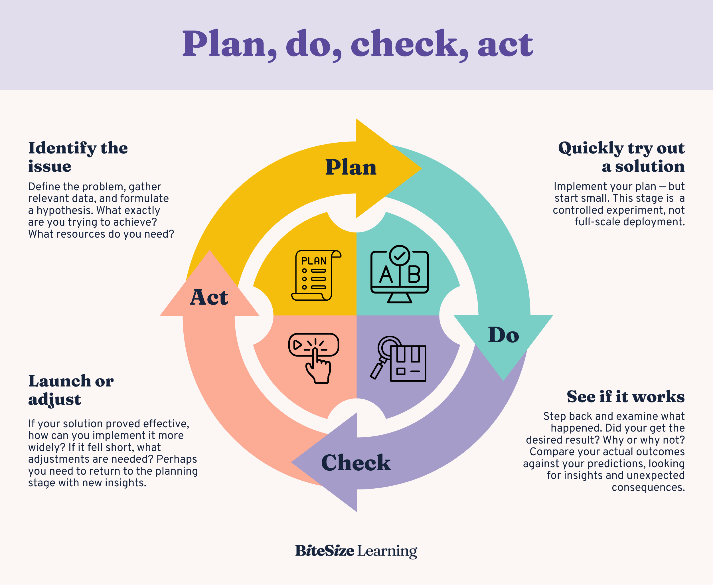

ISO 9001. Quality Management Systems
Erasmus+ Mobility · Isparta University of Applied Sciences · Isparta, Turkey · 2026
ISO 9001. Kalite Yönetim Sistemleri
Erasmus+ Hareketliliği · Isparta Uygulamalı Bilimler Üniversitesi · Isparta, Türkiye · 2026
ABOUT ME
Roman Savitskyi
- PhD student
- Lecturer — Zhytomyr Polytechnic State University, Ukraine
- Digital Experience Lead UA — Tieto

HAKKIMDA
Roman Savitskyi
- Doktora öğrencisi
- Öğretim Görevlisi — Jitomir Politeknik Devlet Üniversitesi, Ukrayna
- Dijital Deneyim Lideri UA — Tieto
ISO — THE ORGANIZATION
Key Facts
- Founded: 23 February 1947, London
- Headquarters: Geneva, Switzerland
- 167 national member bodies
- 25,000+ published standards
- Non-governmental, voluntary organization
- One member body per country
Governance Structure
- General Assembly — supreme governing body
- Council — strategic decisions
- Technical Management Board (TMB)
- 250+ Technical Committees (TC)
- TSE — Turkish Standards Institution (Turkey)
- UkrNDNC — Ukrainian Research Center for Standardization (Ukraine)
Important: ISO does NOT certify organizations — it only publishes standards. Certification is performed by accredited third-party bodies
ISO — ORGANİZASYON
Temel Bilgiler
- Kuruluş: 23 Şubat 1947, Londra
- Genel Merkez: Cenevre, İsviçre
- 167 ulusal üye kuruluş
- 25.000+ yayımlanmış standart
- Hükümet dışı, gönüllü kuruluş
- Ülke başına bir üye kuruluş
Yönetim Yapısı
- Genel Kurul — en yüksek yönetim organı
- Konsey — stratejik kararlar
- Teknik Yönetim Kurulu (TMB)
- 250+ Teknik Komite (TC)
- TSE — Türk Standartları Enstitüsü (Türkiye)
- UkrNDNC — Ukrayna Standardizasyon Araştırma Merkezi (Ukrayna)
Önemli: ISO kuruluşları sertifikalandırmaz — yalnızca standartlar yayımlar. Sertifikasyon, akredite üçüncü taraf kuruluşlar tarafından gerçekleştirilir
ISO/IEC — STANDARDS DEVELOPMENT
ISO/IEC JTC 1
Joint Technical Committee for Information Technology (est. 1987)
- AI & Machine Learning — SC 42
- Cybersecurity — SC 27
- Cloud Computing & IoT — SC 38, SC 41
- Software Engineering — SC 7
How Standards Are Born
- Proposal (NP) → Working Draft (WD)
- Committee Draft (CD) → DIS → FDIS
- Publication as International Standard (IS)
- Review cycle every 5 years
- Approval: ≥ 2/3 of P-members vote yes
IEC — International Electrotechnical Commission. Partners with ISO for IT standards (JTC 1). Independently covers electrical, electronic and related technologies
ISO/IEC — STANDART GELİŞTİRME
ISO/IEC JTC 1
Bilgi Teknolojisi için Ortak Teknik Komite (k. 1987)
- Yapay Zeka ve Makine Öğrenimi — SC 42
- Siber Güvenlik — SC 27
- Bulut Bilişim ve IoT — SC 38, SC 41
- Yazılım Mühendisliği — SC 7
Standartlar Nasıl Oluşur
- Teklif (NP) → Çalışma Taslağı (WD)
- Komite Taslağı (CD) → DIS → FDIS
- Uluslararası Standart (IS) olarak yayım
- Gözden geçirme döngüsü her 5 yılda bir
- Onay: P-üyelerinin ≥ 2/3'ü evet oyu kullanır
IEC — Uluslararası Elektroteknik Komisyonu. BT standartları için ISO ile ortaklık yapar (JTC 1). Elektrik, elektronik ve ilgili teknolojileri bağımsız olarak kapsar
ISO 9001 — WHAT IS IT?
An international standard for Quality Management Systems (QMS). Defines requirements for organizations that want to consistently provide products and services satisfying customer and regulatory requirements.
- Current version: ISO 9001:2015 (5th edition)
- Previous versions: 2008, 2000, 1994, 1987
- Used by over 1 million organizations in 170+ countries
- In Turkey: TS EN ISO 9001:2015 — identical adoption by TSE
- Certification is conducted by independent conformity assessment bodies
https://www.iso.org/iso-9001-quality-management.html
ISO 9001 — NEDİR?
Kalite Yönetim Sistemleri (KYS) için uluslararası bir standarttır. Müşteri ve yasal gereksinimleri karşılayan ürün ve hizmetleri tutarlı biçimde sunmak isteyen kuruluşların gereksinimlerini tanımlar.
- Güncel sürüm: ISO 9001:2015 (5. baskı)
- Önceki sürümler: 2008, 2000, 1994, 1987
- 170'ten fazla ülkede 1 milyondan fazla kuruluş tarafından kullanılır
- Türkiye'de: TS EN ISO 9001:2015 — TSE tarafından özdeş olarak benimsendi
- Sertifikasyon, bağımsız uygunluk değerlendirme kuruluşları tarafından yürütülür
https://www.iso.org/iso-9001-quality-management.html
ISO 9001:2015 — STANDARD STRUCTURE
The standard consists of 10 clauses (Annex SL structure):
- 1–3 Scope, References, Terms
- 4 Context of the organization
- 5 Leadership
- 6 Planning (risks & opportunities)
- 7 Support (resources, competence)
- 8 Operation (process realization)
- 9 Performance evaluation
- 10 Improvement
Key innovation of ISO 9001:2015 — risk-based thinking
https://www.iso.org/iso-9001-quality-management.html
ISO 9001:2015 — STANDART YAPISI
Standart, 10 maddeden oluşur (Ek SL yapısı):
- 1–3 Kapsam, Referanslar, Terimler
- 4 Kuruluşun bağlamı
- 5 Liderlik
- 6 Planlama (riskler ve fırsatlar)
- 7 Destek (kaynaklar, yeterlilik)
- 8 Operasyon (süreç gerçekleştirme)
- 9 Performans değerlendirmesi
- 10 İyileştirme
ISO 9001:2015'in temel yeniliği — riske dayalı düşünce
https://www.iso.org/iso-9001-quality-management.html
7 QUALITY PRINCIPLES
1. Customer Focus
Meeting and exceeding customer expectations
2. Leadership
Unity of purpose, direction and people engagement
3. Engagement of People
Competent and empowered people at all levels
4. Process Approach
Consistent results through systematic process management
5. Improvement
Continuous improvement as a permanent focus
6. Evidence-Based Decisions
Decisions based on data analysis and evaluation
7. Relationship Management
Mutually beneficial relationships with providers and interested parties
7 KALİTE İLKESİ
1. Müşteri Odaklılık
Müşteri beklentilerini karşılamak ve aşmak
2. Liderlik
Amaç, yön ve insan katılımında birlik
3. Kişilerin Katılımı
Her düzeyde yetkin ve yetkilendirilmiş kişiler
4. Süreç Yaklaşımı
Sistematik süreç yönetimiyle tutarlı sonuçlar
5. İyileştirme
Sürekli iyileştirmeyi kalıcı odak noktası olarak benimsemek
6. Kanıta Dayalı Kararlar
Veri analizi ve değerlendirmeye dayalı kararlar
7. İlişki Yönetimi
Tedarikçiler ve ilgili taraflarla karşılıklı yarara dayalı ilişkiler
PDCA CYCLE (SHEWHART-DEMING)

PDCA DÖNGÜSÜ (SHEWHART-DEMING)
PDCA IN SOFTWARE DEVELOPMENT
| Phase | In Manufacturing | In Software Development |
|---|---|---|
| Plan | Technical requirements, quality norms | Sprint planning, Definition of Done, SLA |
| Do | Production process | Development, code review, CI/CD pipeline |
| Check | Quality control, measurement | Testing, metrics monitoring, Sprint Review |
| Act | Corrective actions | Retrospective, bug fixes, process improvement |
Agile and Scrum are by nature an implementation of PDCA within sprint cycles.
YAZILIM GELİŞTİRMEDE PDCA
| Aşama | Üretimde | Yazılım Geliştirmede |
|---|---|---|
| Planla | Teknik gereksinimler, kalite normları | Sprint planlaması, Tamamlanma Tanımı, SLA |
| Uygula | Üretim süreci | Geliştirme, kod incelemesi, CI/CD boru hattı |
| Kontrol Et | Kalite kontrol, ölçüm | Test, metrik izleme, Sprint İncelemesi |
| Önlem Al | Düzeltici faaliyetler | Retrospektif, hata düzeltme, süreç iyileştirme |
Agile ve Scrum, doğası gereği sprint döngüleri içindeki PDCA'nın bir uygulamasıdır.
ISO 9001 SYSTEMS
ISO 9001 requires building and maintaining four interconnected systems:
Documentation System
- Documented information (formerly "procedures")
- Quality manual, procedures, records
- Version control and document access management
Monitoring System
- Process and product KPIs
- Internal audits
- Customer satisfaction analysis
Quality System (QMS)
- Organization process map
- Responsibilities and authorities
- Non-conformity management
Project Management System
- Planning, resources, timelines
- Execution control
- Closure and results evaluation
ISO 9001 SİSTEMLERİ
ISO 9001, birbiriyle bağlantılı dört sistemin kurulmasını ve sürdürülmesini gerektirir:
Dokümantasyon Sistemi
- Belgelenmiş bilgi (önceden "prosedürler")
- Kalite kılavuzu, prosedürler, kayıtlar
- Sürüm kontrolü ve belge erişim yönetimi
İzleme Sistemi
- Süreç ve ürün KPI'ları
- İç denetimler
- Müşteri memnuniyeti analizi
Kalite Sistemi (KYS)
- Kuruluş süreç haritası
- Sorumluluklar ve yetkiler
- Uygunsuzluk yönetimi
Proje Yönetim Sistemi
- Planlama, kaynaklar, zaman çizelgeleri
- Uygulama kontrolü
- Kapanış ve sonuç değerlendirmesi
RISKS — INTERNAL & EXTERNAL
ISO 9001:2015 requires organizations to identify and manage risks. Risks are classified as internal or external.
Strategic
- Market or competitive environment changes
- New regulatory requirements
- Technological disruption
Operational
- Internal process failures
- Technical failures, downtime
- Human errors
Financial
- Budget overruns
- Funding issues
- Currency and market risks
Hazardous
- Staff and user safety
- Cyber attacks, data breaches
- Force majeure, disasters
RİSKLER — İÇ VE DIŞ
ISO 9001:2015, kuruluşların riskleri tanımlamasını ve yönetmesini gerektirir. Riskler iç veya dış olarak sınıflandırılır.
Stratejik
- Pazar veya rekabet ortamı değişiklikleri
- Yeni yasal gereksinimler
- Teknolojik dönüşüm
Operasyonel
- İç süreç hataları
- Teknik arızalar, kesintiler
- İnsan hataları
Finansal
- Bütçe aşımları
- Finansman sorunları
- Kur ve piyasa riskleri
Tehlikeli
- Personel ve kullanıcı güvenliği
- Siber saldırılar, veri ihlalleri
- Mücbir sebep, afetler
RISK ASSESSMENT — 5 STEPS
1
Establish Context
Define scope, objectives and assessment criteria
2
Identification
Identify all possible risks and their sources
3
Analysis
Probability × Impact = Risk Level
4
Evaluation
Prioritization: risk matrix (heat map)
5
Treatment
Mitigation / Transfer / Acceptance / Avoidance
ISO 31000 — a dedicated risk management standard, compatible with ISO 9001
RİSK DEĞERLENDİRME — 5 ADIM
1
Bağlamı Belirle
Kapsam, hedefler ve değerlendirme kriterlerini tanımla
2
Tanımlama
Tüm olası riskleri ve kaynaklarını tanımla
3
Analiz
Olasılık × Etki = Risk Düzeyi
4
Değerlendirme
Önceliklendirme: risk matrisi (ısı haritası)
5
Muamele
Azaltma / Transfer / Kabul / Kaçınma
ISO 31000 — ISO 9001 ile uyumlu, özel risk yönetimi standardı
RISK MATRIX
Risk prioritization by Probability × Impact scale (1 to 5):
| Probability ↓ / Impact → | 1 Negligible | 2 Minor | 3 Moderate | 4 Major | 5 Critical |
|---|---|---|---|---|---|
| 5 Almost Certain | 5 | 10 | 15 | 20 | 25 |
| 4 Likely | 4 | 8 | 12 | 16 | 20 |
| 3 Possible | 3 | 6 | 9 | 12 | 15 |
| 2 Unlikely | 2 | 4 | 6 | 8 | 10 |
| 1 Rare | 1 | 2 | 3 | 4 | 5 |
RİSK MATRİSİ
Risk önceliklendirmesi Olasılık × Etki ölçeğiyle (1'den 5'e):
| Olasılık ↓ / Etki → | 1 Önemsiz | 2 Küçük | 3 Orta | 4 Büyük | 5 Kritik |
|---|---|---|---|---|---|
| 5 Neredeyse Kesin | 5 | 10 | 15 | 20 | 25 |
| 4 Muhtemel | 4 | 8 | 12 | 16 | 20 |
| 3 Mümkün | 3 | 6 | 9 | 12 | 15 |
| 2 Düşük İhtimal | 2 | 4 | 6 | 8 | 10 |
| 1 Nadir | 1 | 2 | 3 | 4 | 5 |
ALARP — RISK MANAGEMENT PRINCIPLE
As Low As Reasonably Practicable
Risk should be reduced to a level as low as reasonably practicable, taking costs and effort into account.
UNACCEPTABLE
Risk is too high. Activity is prohibited or requires immediate action regardless of cost
ALARP
Risk is acceptable if reduction measures are cost-justified. Must be reduced as far as reasonably practicable
ACCEPTABLE
Risk is low enough that no further action is required. Monitoring continues
ALARP — RİSK YÖNETİMİ İLKESİ
Makul Ölçüde Uygulanabildiğince Düşük
Risk, maliyet ve çabayı göz önünde bulundurarak makul ölçüde uygulanabilecek en düşük düzeye indirilmelidir.
KABUL EDİLEMEZ
Risk çok yüksek. Faaliyet yasaktır veya maliyetten bağımsız olarak derhal eylem gerektirir
ALARP
Azaltma önlemleri maliyet açısından haklıysa risk kabul edilebilir. Makul ölçüde mümkün olduğunca azaltılmalıdır
KABUL EDİLEBİLİR
Risk, başka eylem gerektirmeyecek kadar düşük. İzleme devam eder
NON-CONFORMITIES (NC)
Identified during audits. Key improvement mechanism in ISO 9001.
Minor NC
- Isolated departure from a requirement
- Does not threaten the overall system
- Example: one unsigned record, expired document
- Correction deadline: typically within 90 days
Major NC
- Systemic failure or absence of a requirement
- Threatens the organization's ability to meet requirements
- Example: no internal audit process exists at all
- May lead to certificate suspension
NCR Process
Detection → Root Cause Analysis (5 Why, Fishbone) → Corrective Action Plan → Implementation → Verification → NCR Closure
UYGUNSUZLUKLAR (UY)
Denetimler sırasında tespit edilir. ISO 9001'deki temel iyileştirme mekanizması.
Minör UY
- Bir gereksinimden münferit sapma
- Genel sistemi tehdit etmez
- Örnek: imzasız kayıt, süresi dolmuş belge
- Düzeltme süresi: genellikle 90 gün içinde
Majör UY
- Sistemik hata veya gereksinimin yokluğu
- Kuruluşun gereksinimleri karşılama yeteneğini tehdit eder
- Örnek: iç denetim süreci hiç yok
- Sertifikanın askıya alınmasına yol açabilir
UYR Süreci
Tespit → Kök Neden Analizi (5 Neden, Balık Kılçığı) → Düzeltici Faaliyet Planı → Uygulama → Doğrulama → UYR Kapanışı
ANNEX SL — UNIFIED STRUCTURE
Annex SL — an appendix to ISO/IEC directives that defines a common high-level structure for all management system standards. Simplifies simultaneous implementation of multiple standards.
Unified Standards
- ISO 9001 — quality management
- ISO 14001 — environmental management
- ISO 27001 — information security
- ISO 45001 — occupational health & safety
Key Features of Annex SL
- Terminology — unified across standards
- Availability & suitability — of resources and information
- Mandatory requirements — clearly defined
- Mandatory documented procedures — not required in ISO 9001:2015
EK SL — BİRLEŞİK YAPI
Ek SL — tüm yönetim sistemi standartları için ortak yüksek düzeyli yapıyı tanımlayan ISO/IEC direktiflerine bir ektir. Birden fazla standardın eş zamanlı uygulanmasını kolaylaştırır.
Birleşik Standartlar
- ISO 9001 — kalite yönetimi
- ISO 14001 — çevre yönetimi
- ISO 27001 — bilgi güvenliği
- ISO 45001 — iş sağlığı ve güvenliği
Ek SL'nin Temel Özellikleri
- Terminoloji — standartlar arasında birleşik
- Uygunluk ve erişilebilirlik — kaynaklar ve bilgi için
- Zorunlu gereksinimler — açıkça tanımlanmış
- Zorunlu belgelenmiş prosedürler — ISO 9001:2015'te gerekli değil
ANNEX SL — KEY CLAUSES OF ISO 9001
5.1 — Leadership & Commitment
- Top management is personally accountable for the QMS
- Risk-based thinking as part of organizational culture
- Cannot be fully delegated to the "quality department"
4.2 — Interested Parties
- Identify who the interested parties are
- Factors affecting business: market, regulators, customers, suppliers
- Their expectations — inputs for QMS planning
Important for Software Companies
ISO 9001 does not prescribe specific methodologies (Scrum, Kanban, Waterfall) — the organization chooses how to meet the standard's requirements.
EK SL — ISO 9001'İN TEMEL MADDELERİ
5.1 — Liderlik ve Taahhüt
- Üst yönetim, KYS'den kişisel olarak sorumludur
- Riske dayalı düşünce, kurumsal kültürün bir parçası olarak
- "Kalite departmanı"na tamamen devredilemez
4.2 — İlgili Taraflar
- İlgili tarafların kimler olduğunu belirle
- İşletmeyi etkileyen faktörler: pazar, düzenleyiciler, müşteriler, tedarikçiler
- Beklentileri — KYS planlaması için girdiler
Yazılım Şirketleri için Önemli
ISO 9001, belirli metodolojiler (Scrum, Kanban, Şelale) öngörmez — kuruluş, standardın gereksinimlerini nasıl karşılayacağını kendisi seçer.
CERTIFICATION PROCESS
1
Gap Analysis
Analyze current processes against ISO 9001 requirements. Identify gaps.
2
QMS Implementation
Develop documentation, train staff, set up processes. 3–12 months.
3
Internal Audit
Review by internal auditors before external audit. Identify and resolve NCRs.
4
Stage 1 Audit
Desk review — auditor checks documentation. Identifies Major NCs before site visit.
5
Stage 2 Audit
On-site audit — verifying QMS operation in practice. Interviews with staff.
6
Certificate (3 years)
Surveillance audit — annually. Recertification audit — every 3 years.
Certification cost for an IT company: approx. $5,000 – $30,000 depending on size
BELGELENDİRME SÜRECİ
1
Boşluk Analizi
Mevcut süreçleri ISO 9001 gereksinimleriyle karşılaştır. Boşlukları tespit et.
2
KYS Uygulaması
Dokümantasyon hazırla, personel eğit, süreçleri kur. 3–12 ay.
3
İç Denetim
Dış denetimden önce iç denetçiler tarafından gözden geçirme. UY'leri tespit et ve çöz.
4
1. Aşama Denetimi
Belge incelemesi — denetçi dokümantasyonu kontrol eder. Saha ziyaretinden önce Majör UY'leri tanımlar.
5
2. Aşama Denetimi
Yerinde denetim — KYS'nin pratikte işleyişini doğrulama. Personel görüşmeleri.
6
Sertifika (3 yıl)
Gözetim denetimi — yıllık. Yeniden belgelendirme denetimi — her 3 yılda bir.
Bir BT şirketi için belgelendirme maliyeti: yaklaşık 5.000 – 30.000 $ boyuta göre değişir
ISO 9001 IN A SOFTWARE COMPANY
How ISO 9001 looks in practice in a development team:
Documentation
- Architecture Decision Records (ADR)
- Definition of Done (DoD)
- Runbooks, API documentation
Monitoring
- Uptime SLA, error rate, MTTR
- Code coverage, tech debt metrics
- Retrospective — team's internal audit
Quality Management
- Code review as quality control
- Bug tracking (non-conformities)
- CI/CD as automated quality control
Risks in Software
- Risk register in the project
- Dependency risks (libraries, APIs)
- Security & compliance risks
ISO 9001 BİR YAZILIM ŞİRKETİNDE
ISO 9001, geliştirme ekibinde pratikte nasıl görünür:
Dokümantasyon
- Mimari Karar Kayıtları (ADR)
- Tamamlanma Tanımı (DoD)
- Çalıştırma kılavuzları, API belgeleri
İzleme
- Çalışma süresi SLA, hata oranı, MTTR
- Kod kapsama, teknik borç metrikleri
- Retrospektif — ekibin iç denetimi
Kalite Yönetimi
- Kalite kontrolü olarak kod incelemesi
- Hata takibi (uygunsuzluklar)
- CI/CD olarak otomatik kalite kontrolü
Yazılımdaki Riskler
- Projede risk kaydı
- Bağımlılık riskleri (kütüphaneler, API'lar)
- Güvenlik ve uyumluluk riskleri
WHAT YOU WILL ENCOUNTER AT WORK
Documents
- SOP — Standard Operating Procedure for team processes
- Work Instructions — detailed task instructions
- Forms & Templates — standardized documents
- Quality Plan — project quality plan
Processes & Meetings
- Internal audit — you may be asked about your processes
- NCR — if you found or caused a process deviation
- Management Review — quarterly QMS review
- Corrective Action — root cause analysis participation
Tools
- Jira / Azure DevOps — NCR and task tracking
- Confluence / SharePoint — documentation system
- Metrics dashboards — process and product KPIs
What's Expected of You
- Follow documented processes
- Document your work (records)
- Report process deviations
- Participate in process improvement
İŞTE KARŞILAŞACAKLARINIZ
Belgeler
- SOP — Standart İşletme Prosedürü, ekip süreçleri için
- İş Talimatları — ayrıntılı görev talimatları
- Formlar ve Şablonlar — standartlaştırılmış belgeler
- Kalite Planı — proje kalite planı
Süreçler ve Toplantılar
- İç denetim — süreçleriniz hakkında sorulabilirsiniz
- UYR — bir süreç sapması buldunuz veya neden oldunuz
- Yönetim Gözden Geçirmesi — üç aylık KYS incelemesi
- Düzeltici Faaliyet — kök neden analizine katılım
Araçlar
- Jira / Azure DevOps — UYR ve görev takibi
- Confluence / SharePoint — dokümantasyon sistemi
- Metrik panoları — süreç ve ürün KPI'ları
Sizden Beklenenler
- Belgelenmiş süreçlere uyun
- Çalışmanızı belgeleyin (kayıtlar)
- Süreç sapmalarını bildirin
- Süreç iyileştirmesine katılın
ANY QUESTIONS?
What would you like to clarify?
ISO 9001:2015: https://www.iso.org/iso-9001-quality-management.html
TSE (Turkish Standards Institution): https://www.tse.org.tr/
ISO 31000 Risk Management: https://www.iso.org/iso-31000-risk-management.html
SORULARINIZ VAR MI?
Neyi netleştirmek istersiniz?
ISO 9001:2015: https://www.iso.org/iso-9001-quality-management.html
TSE (Türk Standartları Enstitüsü): https://www.tse.org.tr/
ISO 31000 Risk Yönetimi: https://www.iso.org/iso-31000-risk-management.html